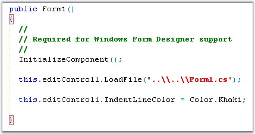
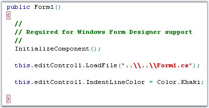
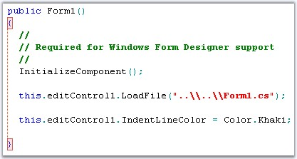

Edit Control has one of the most powerful and intelligent Bracket Highlighting and Indentation Guideline features. Edit Control is also capable of supporting language domains that have multiple languages, such as HTML or XML. Moreover, for each language, different brackets can be defined for highlighting. In C#, curly braces can be highlighted, while in HTML or XML, angled braces (for tags) can be highlighted.
Consider the following example.
|
[C#]
public void Test() { string str; str = "{"; } |
If the cursor is positioned on the end curly brace, most editors will match to the open curly brace in the string. On the contrary, Edit Control matches to the open curly brace for the method.
The Bracket Highlighting and Indentation Guidelines functionalities are supported using the following APIs in the Edit Control.
· ShowIndentationGuidelines
· HideIndentationGuidelines
· ShowIndentGuideline
· IndentLineColor
· IndentBlockHighlightingColor
· IndentationBlockBackgroundBrush
· IndentationBlockBorderColor
· IndentationBlockBorderStyle
· JumpToIndentBlockStart
· JumpToIndentBlockEnd
· OnlyHighlightMatchingBraces
The preceding APIs are explained below in detail.
The indentation guidelines are vertical lines that connect the matching brackets. This feature enhances the readability of code.
|
Edit Control Property |
Description |
|
ShowIndentationGuidelines |
Gets / sets value indicating whether indentation guidelines should be shown. |
The indentation guidelines can be turned on by setting the ShowIndentationGuidelines property to True. It can be turned off either by setting this property to False, or by invoking the HideIndentGuideline method.
Also, the indent guideline for the current region can be set by using the ShowIndentGuideline method.
|
Edit Control Method |
Description |
|
HideIndentGuideline |
Hides indentation guideline. |
|
ShowIndentGuideline |
If possible, shows indent guideline of the current region. |
|
[C#]
// Indentation Guidelines are displayed. this.editControl1.ShowIndentationGuidelines = true;
// Hide Indentation Guideline. this.editControl1.HideIndentGuideline();
// Show Indentation Guideline. this.editControl1.ShowIndentGuideline(); |
|
[VB.NET]
' Indentation Guidelines are displayed. Me.editControl1.ShowIndentationGuidelines = True
' Hide Indentation Guideline. Me.editControl1.HideIndentGuideline()
' Show Indentation Guideline. Me.editControl1.ShowIndentGuideline() |
Bracket Highlighting
The bracket highlighting feature can be turned on by enabling the ShowIndentationGuidelines and OnlyHighlightMatchingBraces properties. Setting the OnlyHighlightMatchingBraces property to True, enables bracket highlighting whereas the indentation guidelines are not displayed.

Figure 26: Bracket Highlighting with Indentation Guidelines

Figure 27: Bracket Highlighting without Indentation Guidelines
Customizing the Appearance
It is possible to specify custom colors for the indentation guidelines and bracket highlighting blocks by using the below given properties.
|
Edit Control Property |
Description |
|
IndentLineColor |
Specifies color of the indent line. |
|
IndentBlockHighlightingColor |
Specifies color of the indent block start and end. |
|
IndentationBlockBackgroundBrush |
Gets / sets brush for indentation block background. |
|
IndentationBlockBorderColor |
Specifies color of indentation block border line. |
|
IndentationBlockBorderStyle |
Specifies style of indentation block border line. |
|
ShowIndentationBlockBorders |
Specifies whether indentation block borders should be drawn. |
|
[C#]
this.editControl1.IndentLineColor = Color.OrangeRed; this.editControl1.IndentBlockHighlightingColor = Color.IndianRed; this.editControl1.IndentationBlockBackgroundBrush = new Syncfusion.Drawing.BrushInfo(Syncfusion.Drawing.GradientStyle.BackwardDiagonal, System.Drawing.SystemColors.Info, System.Drawing.Color.Khaki); this.editControl1.IndentationBlockBorderColor = System.Drawing.Color.Crimson; this.editControl1.IndentationBlockBorderStyle = Syncfusion.Windows.Forms.Edit.Enums.FrameBorderStyle.DashDot; this.editControl1.ShowIndentationBlockBorders = true; |
|
[VB.NET]
Me.editControl1.IndentLineColor = Color.OrangeRed Me.editControl1.IndentBlockHighlightingColor = Color.IndianRed Me.editControl1.IndentationBlockBackgroundBrush = New Syncfusion.Drawing.BrushInfo(Syncfusion.Drawing.GradientStyle.BackwardDiagonal, System.Drawing.SystemColors.Info, System.Drawing.Color.Khaki) Me.editControl1.IndentationBlockBorderColor = System.Drawing.Color.Crimson Me.editControl1.IndentationBlockBorderStyle = Syncfusion.Windows.Forms.Edit.Enums.FrameBorderStyle.DashDot Me.editControl1.ShowIndentationBlockBorders = True |

Figure 28: IndentLineColor = "OrangeRed"; IndentBlockHighlightingColor = "IndianRed"
Positioning
It is also possible to position the caret at the beginning or end of the indentation block by using the JumpToIndentBlockStart and JumpToIndentBlockEnd methods respectively.
|
Edit Control Method |
Description |
|
JumpToIndentBlockStart |
Jumps to the start of the block. |
|
JumpToIndentBlockEnd |
Jumps to the end of the block. |
Refer to the Indentation Guidelines Demo sample for more information in this regard.
..\My Documents\Syncfusion\EssentialStudio\Version Number\Windows\Edit.Windows\Samples\2.0\Text Navigation\IndentationGuidelinesDemo